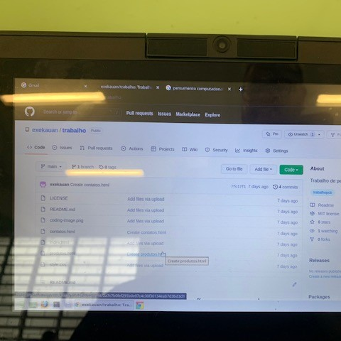
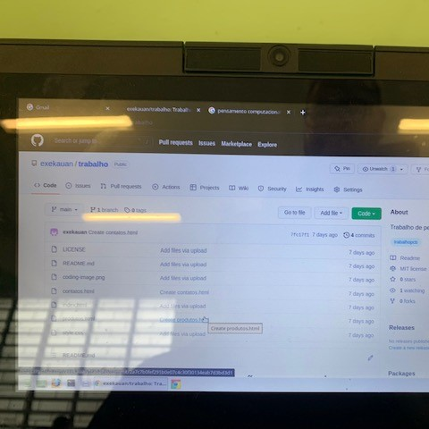
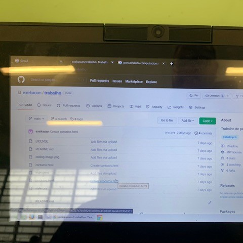
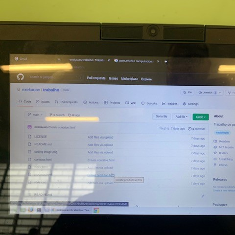

 

Os alunos ainda apresentaram bastante dificuldade para a realização de tarefas basicas como a criação de um repositório no GitHub que envolve vários passos inclusive alguns em inglês, e na criação de uma aplicação simples onde os alunos cometiam muitos erros de sintaxe, errava o nome das tags, esquecia de fechar as tags, tinham um pouco de preguiça de realizar o texto de seus negócios entre outras dificuldades que vem desde abrir o editor de texto até salvar no GitHub. Os mesmos pontos levantados na primeira parte do curso.
Ainda acerca da primeira parte do curso, os alunos continuam levando a componente assim como todas as outras de forma indiferente e desinteressada, o que se torna um desafio para o curso da componente.
Inicialmente foi realizado uma apresentação dos powerpoint disponibilizados pelo Alura e uma exemplificação em sala de aula na sequencia foi iniciado a escrita das páginas no caderno, uma vez que temos somente uma aula no laboratório, por fim eles se dirigiram ao laboratório para a resolução do problema proposto (aplicação dos conhecimentos de css e html).
O teste gamificado foi aplicado de forma a incentivar os alunos a pensarem sobre o que foi visto nas video aulas e nas apresentações, alem disto, fornece um material para que eles consigam realizar suas atividades
Aqui, devido aos jogos da copa, realizações das provas finais e as ferias chegando, os alunos sentiram-se em clima de ferias e desta forma largaram quase todas as suas resposnsabilidades com notas, frequência e tudo mais. Entretanto, foi neste terceiro trimestre que foi percebido alguns alunos que quiseram se aprofundar mais e se propuseram a fazer as atividades em casa, alem da escola, mostrando que, a componente curricular conseguiu sensibilizar-los a mudar suas realidades de alguma forma.